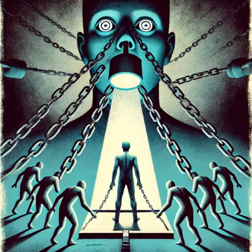

Publicado em 2025-04-07 18:05:38
Em "Escuta, Zé Ninguém", Wilhelm Reich, psicanalista e pensador revolucionário, lança um apelo contundente à consciência adormecida da sociedade comum, representada pelo simbólico "Zé Ninguém". Com um tom apaixonado, profundamente crítico, mas também compassivo, Reich desnuda as raízes da passividade social, da submissão cega à autoridade e da aceitação resignada da mediocridade.
Publicado originalmente em 1946, num contexto pós-guerra marcado pela devastação, pela ascensão e queda de regimes totalitários e por uma profunda crise de valores, o livro mantém uma atualidade inquietante. Reich examina com rigor e intensidade emocional como indivíduos comuns, "os Zés Ninguém", renunciam inconscientemente à sua capacidade crítica e à própria responsabilidade pessoal, optando por confiar cegamente em líderes autoritários e estruturas de poder que prometem segurança e conforto ilusórios.
Reich aborda a condição humana com sinceridade brutal, argumentando que o fascismo não é apenas uma força externa, mas uma tendência psicológica profundamente enraizada na submissão e na negação da própria autonomia e liberdade. Ele critica o medo generalizado da liberdade, que impele os indivíduos a sacrificarem-se em nome de falsas certezas, dando espaço ao surgimento e perpetuação de regimes autoritários, mesmo em sociedades supostamente democráticas.
O autor sublinha que a verdadeira revolução social e política começa pela transformação interior, uma revolução pessoal que exige coragem para enfrentar a própria ignorância, insegurança e fragilidade. Para Reich, cada indivíduo possui dentro de si um potencial imenso de liberdade, criatividade e dignidade, mas é preciso coragem para libertar esse potencial.
Neste sentido, "Escuta, Zé Ninguém" não é apenas um livro de crítica social e política, mas também um convite à reflexão íntima e à mudança pessoal. A obra desafia cada leitor a abandonar a mentalidade passiva e a tornar-se protagonista consciente da própria vida e do destino coletivo, enfrentando as forças internas e externas que o aprisionam na mediocridade e na submissão.
Wilhelm Reich oferece, assim, uma poderosa e necessária mensagem: a verdadeira liberdade e dignidade humanas apenas poderão ser alcançadas quando cada pessoa assumir plena consciência de si mesma e do seu papel ativo na construção de uma sociedade mais justa, autêntica e verdadeiramente democrática.
Créditos para IA, OpenAI, e ChatGPT (c) na estruturação e oesquisa para este artigo.